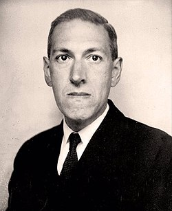
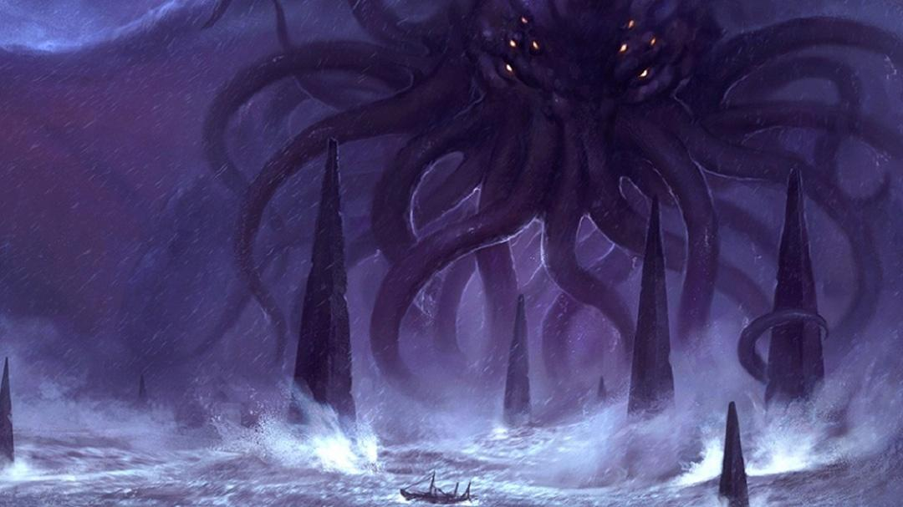

Lovecraft Blog
Bem-vindo ao Lovecraft Blog
Explore o universo complexo e enigmático de H.P. Lovecraft, um dos mestres indiscutíveis da ficção de terror. Navegue
pelas narrativas intrincadas de um escritor que desafiou os limites da imaginação humana, mergulhando em temas profundos
e perturbadores. Viaje por paisagens obscuras e inquietantes, onde o desconhecido espreita a cada esquina e o sobrenatural
se entrelaça com a realidade. Descubra o legado duradouro de um autor cuja influência se estende por décadas, convidando-o
a confrontar os mistérios e horrores do cosmos.
Biografia de H.P. Lovecraft

Howard Phillips Lovecraft nasceu às 9 da manhã do dia 20 de agosto de 1890, na casa de sua família,
no número 454 (na época, 194) da Angell Street, em Providence, Rhode Island.Sua mãe era Sarah Susan
Phillips Lovecraft, cuja ancestralidade ascendia à chegada de George Phillips a Massachusetts, em 1630.
Seu pai era Winfield Scott Lovecraft, vendedor ambulante da Gorham & Co., Silversmiths, de Providence.
Quando Lovecraft tinha três anos, seu pai sofreu um colapso nervoso num quarto de hotel em Chicago e foi
trazido de volta para o Butler Hospital, onde permaneceu por cinco anos até morrer em 19 de julho de 1898.
Aparentemente, Lovecraft aprendeu que seu pai esteve paralisado e em coma durante esse período, mas as evidências
sugerem que não foi isso que aconteceu. É quase certo que o pai de Lovecraft morreu de paresia, causada pela sífilis.
Com a morte do pai, a responsabilidade de criar o filho recaiu sobre a mãe, duas tias e, em especial, sobre seu avô,
o proeminente industrial Whipple Van Buren Phillips. Lovecraft foi uma criança precoce: aos dois anos já recitava
poesia e aos três já lia. Foi nessa época que adaptou o pseudônimo de Abdul Alhazred, que mais tarde se tornaria o
autor do mítico Necronomicon. No ano seguinte, porém, seu interesse por assuntos árabes foi eclipsado pela descoberta
da mitologia grega, colhida na Age of Fable de Thomas Bulfinch e em versões para crianças da Ilíada e da Odisséia. Com
efeito, o mais antigo de seus escritos que se conhece, “O poema de Ulisses” (1897), é uma paráfrase da Odisséia em 88
versos com rimas internas. Mas Lovecraft, por esse tempo, já havia descoberto a ficção fantástica, e sua primeira
história – “The Noble Eavesdropper” (O nobre mexeriqueiro) –, que não chegou até nós, parece remontar a 1896. Seu
interesse pelo fantástico proveio de seu avô, que entretinha Lovecraft com histórias improvisadas, à maneira gótica.
Enquanto menino, Lovecraft foi um tanto solitário e sofreu de doenças freqüentes, muitas, aparentemente, de natureza
psicológica. Freqüentou de maneira esporádica a Slater Avenue School, mas encharcou-se de informações por meio de
leituras independentes. Por volta dos oito anos, descobriu a ciência, primeiro a química, depois a astronomia.
Passou a produzir jornais em hectógrafo – The Scientific Gazette (A Gazeta Científica) e The Rhode Island Journal
of Astronomy (Folha de Astronomia de Rhode Island) –, para serem distribuídos entre amigos. Quando foi para a Hope
Street High School (nível colegial), encontrou afinidade e encorajamento tanto nos professores quanto nos colegas e
desenvolveu várias amizades bastante duradouras com rapazes da sua idade. A estréia de Lovecraft em letra impressa
ocorreu 1906, quando enviou uma carta tratando de assunto astronômico ao Providence Sunday Journal. Pouco depois,
começou a escrever uma coluna mensal de astronomia para o Pawtuxet Valley Gleaner, um jornalzinho rural. Mais tarde
escreveu colunas para o Providence Tribune (1906-8) e o Providence Evening News (1914-1918), bem como para o
Asheville (N. C.) Gazette-News (1915).
Em 1904, a morte do avô de Lovecraft e a subseqüente dilapidação de seu patrimônio e negócio mergulharam a família
em sérias dificuldades. Lovecraft e sua mãe se viram forçados a abandonar a glória de seu lar vitoriano para morar
numa residência apertada, no número 598 da Angell Street. Lovecraft ficou arrasado com a perda do lar natal.
Aparentemente, ele teria pensado em suicídio, enquanto passeava de bicicleta e contemplava as profundezas escuras
do rio Barrington. Mas o gosto de aprender baniu esses pensamentos. Em 1908, porém, pouco antes de sua formatura
no colégio, sofreu um colapso nervoso que o obrigou a deixar a escola sem receber o diploma. Esse fato e o conseqüente
fracasso em tentar entrar para a Brown University sempre o envergonharam nos anos posteriores, não obstante ter sido
ele um dos autodidatas mais formidáveis de seu tempo. Entre 1908 e 1913, Lovrecraft viveu praticamente como um
eremita, dedicando-se quase só aos seus interesses astronômicos e a escrever poesia. Ao longo de todo esse período,
Lovecraft se envolveu numa relação fechada e pouco saudável com a mãe, que ainda sofria com o trauma da doença e
morte do marido e que desenvolveu uma relação patológica de amor-ódio com o filho.
Lovecraft emergiu de seu eremitério de maneira bastante peculiar. Tendo começado a ler os primeiros magazines pulp de
sua época, ficou tão irritado com as insípidas histórias de amor de um certo Fred Jackson, no Argosy, que escreveu
uma carta em versos, atacando Jackson. A carta foi publicada em 1913, suscitando uma tempestade de protestos por
parte dos defensores de Jackson. Lovecraft se meteu num debate acalorado na coluna de cartas do Argosy e dos
magazines congêneres, aparecendo as suas respostas quase sempre em dísticos heróicos e humorísticos, descendentes
de Dryden e Pope. A controvérsia foi notada por Edward F. Daas, presidente da United Amateur Press Association
(Associação Unida de Imprensa Amadora, UAPA), um grupo de escritores amadores de todo o país que escreviam e
publicavam os seus próprios magazines. Daas convidou Lovecraft a se juntar à UAPA, e Lovecraft fez isso nos
começos de 1914. Lovecraft publicou treze edições de seu próprio periódico, The Conservative (O conservador, 1915-23),
e também enviou volumosas contribuições de poesia e ensaios para outros jornais. Mais tarde, tornou-se presidente e
editor oficial da UAPA, atuando ainda, por breve período, como presidente da rival National Amateur Press Association
(Associação Nacional de Imprensa Amadora, NAPA). Essas experiências podem ter salvado Lovecraft de uma vida de
reclusão improdutiva; como ele mesmo disse certa vez: “Em 1914, quando a mão amigável do amadorismo se estendeu para
mim, eu estava tão próximo do estado de vegetação quanto qualquer animal... Com o advento da [Associação] Unida,
ganhei uma renovação de vida, um senso renovado da existência como sendo algo mais que um peso supérfluo, e
encontrei uma esfera na qual podia sentir que meus esforços não eram totalmente fúteis. Pela primeira vez, pude
imaginar que minhas investidas desajeitadas no campo da arte eram um pouco mais do que gritos débeis perdidos no
mundo indiferente.”
Foi no universo amador que Lovecraft recomeçou a escrever sua ficção, abandonada em 1908. W. Paul Cook e outros,
percebendo as promessas dessas primeiras histórias, tais como The beast in the cave (A besta na caverna, 1905)
ou The alchemist (O alquimista, 1908), instaram Lovecraft a retomar a pena. E foi o que Lovecraft fez, escrevendo,
num jorro, The tomb (A tumba) e Dagon no verão de 1917. Depois, Lovecraft manteve um constante, porém esparso,
fluxo de ficção, embora até pelo menos 1922 a poesia e os ensaios ainda fossem os seus modos predominantes de expressão.
Lovecraft também se envolveu numa rede sempre crescente de correspondência com amigos e associados, o que o tornou um
dos maiores e mais prolíficos missivistas do século.
A mãe de Lovecraft, com sua condição mental e física deteriorada, sofreu um colapso nervoso em 1919, dando entrada no
Butler Hospital, de onde, tal como seu marido, jamais sairia. Sua morte, porém, ocorrida em 24 de maio de 1921,
deveu-se a uma cirurgia mal conduzida de vesícula. Lovecraft sofreu profundamente com a perda da mãe, mas
em poucas semanas se recuperou o suficiente para comparecer a uma convenção de jornalismo amador em Boston,
a 4 de julho de 1921. Foi nessa ocasião que viu pela primeira vez a mulher que se tornaria sua esposa. Sonia
Haft Green era judia-russa, com sete anos a mais que Lovecraft, mas ambos parecem ter encontrado, pelo menos no início,
bastante afinidade um no outro. Lovecraft visitou Sonia em seu apartamento no Brooklyn em 1922, e a notícia de seu
casamento – em 3 de março de 1924 – não foi surpresa para seus amigos, mas pode ter sido para as duas tias de Lovecraft,
Lillian D. Clark e Annie E. Phillips Gramwell, que foram notificadas por carta só depois que a cerimônia ocorreu.
Lovecraft se mudou para o apartamento de Sonia no Brooklyn, e as perspectivas iniciais do casal pareciam boas:
Lovecraft angariara posição como escritor profissional, por meio da aceitação de várias de suas primeiras
histórias na Weird Tales, o célebre magazine fundado em 1923, e Sonia tinha uma loja de chapéus bem-sucedida na
Quinta Avenida, em Nova York.
Mas os problemas chegaram para o casal quase imediatamente: a loja de chapéus faliu, Lovecraft perdeu a chance de
editar um magazine associado à Weird Tales (para o que seria necessário que se mudasse para Chicago), e a saúde de
Sonia se esvaiu, obrigando-a a passar uma temporada no sanatório de Nova Jersey. Lovecraft tentou garantir trabalho,
mas poucos estavam dispostos a empregar um “velho” de trinta e quatro anos que não tinha experiência. Em primeiro de
janeiro de 1925, Sonia foi trabalhar em Cleveland, e Lovecraft se mudou para um apartamento de solteiro, junto a um
setor decadente do Brooklyn, denominado Red Hook.
Embora tivesse muitos amigos em Nova York – Frank Belknap Long, Rheinhart Kleiner, Samuel Loveman –, Lovecraft tornou-se cada vez mais depressivo, devido ao isolamento em que vivia e às massas de “forasteiros” na cidade. Sua ficção passou do nostálgico (“The shunned house” – 1924 – se passa em Providence) para o frio e misantrópico (“The horror in Red Hook” e “He” – ambas de 1924 – expõem claramente seu sentimento por Nova York). Finalmente, no início de 1926, fizeram-se planos para a volta de Lovecraft a Providence, da qual sentia tanta falta. Mas onde se encaixava Sonia nesses planos? Ninguém parecia saber, muito menos Lovecraft. Embora continuasse a professar sua afeição por ela, acabou concordando quando suas tias se opuseram à vinda dela a Providence, para iniciar um negócio: seu sobrinho não podia manchar-se com o estigma de uma esposa que era negociante. O casamento praticamente acabou, e o divórcio – ocorrido em 1929 – foi inevitável.
Quando Lovecraft retornou a Providence, em 17 de abril de 1926, para morar na Barnes Street, ao norte da Brown University,
não foi para se sepultar, conforme fizera no período de 1908-1913. De fato, os últimos dez anos de sua vida foram o tempo
de seu maior florescimento, tanto como escritor quanto como ser humano. Sua vida era relativamente pobre de ocorrências
– viajou largamente por vários lugares antigos ao longo da costa leste (Quebec, Nova Inglaterra, Filadélfia, Charleston,
Santo Agostinho); escreveu sua melhor ficção, isto é, desde “The call of Cthulhu” (O chamado de Cthulhu, 1926)
até “At the mountains of madness” (Nas montanhas da loucura, 1931) e “The shadow out of Time” (A sombra dos tempos,
1934-1935); e continuou sua correspondência vasta e prodigiosa –, mas tinha encontrado seu nicho como escritor de
ficção fantástica da Nova Inglaterra e também como homem de letras. Estimulou a carreira de muitos autores jovens
(August Derleth, Donald Wandrei, Robert Bloch, Fritz Leiber); voltou-se para as questões políticas e econômicas,
quando a Grande Depressão o levou a apoiar Roosevelt e a se tornar um socialista moderado; e continuou absorvendo
conhecimento num largo espectro de temas, de filosofia até literatura, história e arquitetura.
Nos últimos dois ou três anos de sua vida, no entanto, Lovecraft passou por alguns apertos. Em 1932, morreu a sua amada
tia Mrs. Clark, e ele se mudou para o número 66 da College Street, atrás da John Hay Library, levando consigo sua outra
tia, Mrs. Gamwell, em 1933. (Esta casa é agora o número 65 da Prospect Street.) Suas últimas histórias, cada vez mais
longas e complexas, eram difíceis de vender, e ele foi forçado a ganhar seu sustento às custas de muita “revisão” ou
trabalho como ghost-writer de histórias, poesia e obras não-ficcionais. Em 1936, o suicídio de Robert E. Howard, um de
seus correspondentes mais chegados, deixou-o desorientado e triste. Por essa época, a doença que o levaria à morte – um
câncer no intestino – havia progredido tanto que pouco se podia fazer para tratá-la. Lovecraft tentou resistir, em meio
às dores crescentes, através do inverno de 1936-1937, mas finalmente teve de dar entrada no Jane Brown Memorial Hospital,
em 10 de março de 1937, onde morreu cinco dias depois. Foi sepultado em 18 de março, no jazigo da família Phillips, no
Swan Point Cemetery.
É provável que, percebendo a aproximação da morte, Lovecraft tenha entrevisto o esquecimento final de sua obra: nunca
teve um único livro publicado em toda a vida (a não ser, talvez, a péssima edição de The shadow over Innsmouth – A
sombra sobre Innsmouth –, de 1936), e suas histórias, ensaios e poemas jaziam espalhados por uma porção desconcertante
de pulp magazines amadores. Mas as amizades que ele tinha forjado só por correspondência lhe valeram aqui: August Derleth
e Donald Wandrei estavam determinados a preservar dignamente as histórias de Lovecraft num um livro de capa dura e
criaram ao selo editorial Arkham House, destinado inicialmente à publicação de Lovecraft. Editaram The outsider and
the others (O forasteiro e outras histórias), em 1939. Diversos outros volumes se seguiram pela Arkham House, até que a
obra de Lovecraft passou ao papel e foi traduzida em uma dúzia de línguas. Hoje, no centenário de seu nascimento, suas
histórias estão disponíveis em edições com texto corrigido, seus ensaios, poemas e cartas circulam amplamente, e muitos
estudiosos têm comprovado as profundidades e complexidades de sua obra e de seu pensamento. Falta muito a ser feito no
estudo de Lovecraft, mas é correto dizer que, graças ao mérito intrínseco de seu trabalho e à diligência de seus
associados e apoiadores, Lovecraft conquistou um pequeno, mas inexpugnável, nicho no cânone das literaturas americana
e mundial.
Amigos Escritores do Lovecraft
Foram muitos os amigos de Lovecraft ao longo de sua vastíssima correspondência. Selecionamos alguma das biografias de
seus amigos mais próximos, além de personalidades marcantes ao longo de sua vida e que juntos desenvolveram histórias
de horror cósmico-mitológico formando o chamado "Círculo de Lovecraft". Leia ao lado da foto uma breve descrição biográfica:
Robert Ervin Howard (1906-1936)
Grande correspondente e amigo de Lovecraft, embora bem mais novo que o mesmo. Nasceu e viveu quase toda sua vida no
Texas, principalmente em Cross Plain. Tinha em Lovecraft e Clark Ashton Smith seus grandes amigos que escreviam seus
magníficos contos para a Weird Tales. Sua principal criação foi Conan - o Bárbaro, mas também escreveu sobre velho-oeste,
histórias orientais algum relato erótico e até boxe (Howard era conhecido por sua grande força física, igual a seus personagens
e era aficionado por este esporte). Bob, como o conheciam, era amante da natureza e dos animais e embora seu jeito não aparentasse
, se definia como uma pessoa muito sensível. Sempre viveu em crise econômica (próprio dos anos pré-depressão), e com velha mãe
doente entrou em desespero falando em suicídio cada vez que ela piorava, pois recebia parcelado uma dívida de US$ 800 da Weird
Tales de contos publicados e a publicar, embora o pai médico pouco podia ajudar, pois seu pagamento era em itens por seu trabalho.
Um dia antes da tragédia perguntou ao Dr. Dill, médico e amigo do seu pai, se uma pessoa poderia morrer com um tiro na cabeça...
havia comprado três sepulturas pouco antes de morrer, feito um pequeno inventário e ido perguntar sobre a mãe doente a enfermeira
que falou negativamente sobre sua recuperação.
Com a idade de 30 anos ele desceu até a garagem e em dentro de um Chevy 1935 atirou contra a cabeça com um revolver Colt do pai,
usando uma munição calibre .380 emprestada de um amigo que nada sabia de sua intenção premeditada. O pai, o Dr. Dill e a empregada
da casa (por conta da mãe não poder mais fazer os trabalhos domésticos), praticamente presenciaram o suicídio. O pai e o outro
médico tiraram Bob Howard do carro e o levaram para um cama. Ele morreu oito horas depois do disparo e sua mãe trinta e uma horas
após. Ambos foram enterrados juntos. Isto foi o que o pai de Bob Howard informou Lovecraft por uma carta sobre o ocorrido dizendo
também que ele vinha com esta idéia um ano antes quando sua mãe piorara. Este fato deixou Lovecraft triste e depressivo por um bom
tempo.
August William Derleth (1909-1971) e Donald Wandrei (1908-1987)

Ambos escritores e correspondentes de Lovecraft. Wandrei, por sua vez correspondia-se desde 1924 com Clark A. Smith o que o fez amigo
de Lovecraft (que constantemente dava a ele conselhos literários). Também durante a vida de Lovecraft seu amigo de Wiscosin August
Derleth (correspondente de 1926 a 1937), reconheceu seu trabalho, tentou oferecê-lo as editoras, mas sem sucesso. Em 1927 Wandrei
vai a Nova York na Weird Tales tentar oferecer ao editor Fansmouth Wright os escritos de Lovecraft e aproveita para conhecer
Lovecraft e especialmente Samuel Loveman. Chegou a Providence em 1929 ficando alguns dias por lá vindo também a conhecer Frank
Belknap Long e James F. Morton. Meses depois Lovecraft o põe em contato com Derleth, numa relação de amizade que durou até a morte
de Derleth em 1971. Wandrey também visitou Providence em 1932. Após a morte de Lovecraft ambos tentam levar as editoras sua obra
mais sem sucesso, por isto criaram uma própria editora a Arkham House que tão bem iniciou a fama de Lovecraft. Durante este período,
principalmente Derleth divulga muito a obra de Lovecraft e também em outros países, mas foi criticado quanto a sua sistematização do
mito de Cthulhu. Wandrei por sua vez é o grande responsável pela idéia e esforços de se publicar as cartas de Lovecraft, um imenso
trabalho que resultou no lançamento tardio das Selected Letters (1965-76). Em 1971 após a morte de Derleth, Wandrei entra numa briga
de herança com os herdeiros do amigo o que o faz se afastar da editora.
Robert Albert Bloch (1917-1994)

Bloch nasceu em Chicago, Illinois. Na idade de 9 anos assistiu seu primeiro filme de terror "O Fantasma da Opera" o que o fez dormir com
a luz acessa. Daí adquiriu seu gosto pelo gênero de horror. A Weird Tales era sua revista favorita e seu primeiro texto foi uma
paródia de Lovecraft intitulada "The Thing". Depois de concluir o ensino médio na idade de 17 anos ele comprou uma máquina de
escrever usada e vendeu seu primeiro conto a Weird Tales, intitulado: "The Feast in the Abbey". Sempre foi admirador de Lovecraft,
mas nunca o conheceu em vida. Sua brilhante carreira assumiu outras formas depois da morte de HPL, embora continuasse com a temática
de Cthulhu. Ficou muito famoso com a criação Norman Bates em "Psicosis" (Psycho) de 1959, com a famosa adaptação de Alfred Hitchcock
do livro e suas seqüências. Durante sua longa carreira ganhou vários prêmios e foi reconhecido como um grande escritor de sua época.
Robert Hayward Barlow (1918-1951)

Correspondente e admirador de Lovecraft. Barlow não admitia que quando começou a corresponder com HPL tinha apenas 13 anos.
Foi um grande amigo. Publicou muitos trabalhos cedo e por indicação de Lovecraft se filiou a NAPA. Em 1934 Lovecraft foi a
Florida no verão na casa de campo da família Barlow em De Land, passar um mês e meio, onde ambos produziram muitas coisas.
Novamente a convite de Barlow no verão seguinte seguinte Lovecraft retorna a De Land e fica desta vez dois meses e meio. Na
mesma idéia, Barlow vai a Providence no verão seguinte e ambos escrevem "The Night Ocean", sendo que ao que parece o conto
tem mais de Barlow do que Lovecraft, mas isto não é muito certo afirmar. Após o falecimento de Lovecraft foi a Providence e
se encarregou das questões legais da herança e manuscritos (a herdeira legal foi sua tia Annie E. P. Gamwell). Barlow reuniu
os materiais de Lovecraft e levou-os a Brown University depositando-os lá, motivo pelo qual Wandrei não entendeu e o chamou
de "ladrão" das obras. Barlow também é um dos grandes responsáveis pela obra de Lovecraft chegar até nós, pois também
datilografou muito de seus originais (coisa que Lovecraft detestava fazer). Colaborou com a primeira biografia séria do autor
de T. Lanay e William H. Evans em 1943. Neste mesmo ano vai dar aulas de antropologia na Universidade do México, onde é
muito reconhecido e publica vários livros a respeito. Entretanto em 1951 se suicida num hotel da Cidade do México por conta
de uma chantagem que fizeram algumas pessoas que descobriram ser ele homossexual (na época que vivia era terrível se a
sociedade soubesse).
Henry Kuttner (1914-1958)
Kuttner conheceu Lovecraft através de Robert Bloch e foi um dos jovens escritores tutelados pelo mestre (a exemplo do próprio
Bloch). Escreveu para ele pela primeira vez em meados de 1936. Casou-se com Catherine Lucille Moore (conhecida de Lovecraft
através de R.H. Barlow), e por anos escreveu histórias de terror e fantasia. Na década de 1950 por certo aborrecimento deixa
a literatura fantástica por um tempo e junto com a esposa se gradua em psicologia na Sourthen California University.
Pretendendo fazer um doutorado, morre repentinamente dormindo em 1958, talvez por conta de um ataque cardíaco. Sua esposa
casou-se novamente e com um médico, vivendo mais três décadas, mas sem escrever nada apenas mantendo contato com os fãs de
ficção cientifica, quando em 1981 numa convenção sobre ficção científica em Denver a encheram de honras. Morreu com
complicações de Alzheimer em 1987. Em 2007 filmaram 'Mimzy- A Chave do Universo', de autoria dele e da esposa C.L. Moore sob
uso de pseudônimo, como era comum eles fazerem.
Frank Belknap Long (1901-1994)

Escritor, grande amigo (talvez mais amigo ainda que Robert E. Howard) e um dos correspondentes mais antigos de Lovecraft,
desde a época que eram adolescentes, se converteu em um dos maiores nomes da literatura americana de ficção fantástica tendo
em 1987 ganhado o prêmio Bram Stocker Award. Ativo membro da UAPA (United Amateur Press Association) aonde publicou o conto
"The Eye Above the Mantel", que chamou atenção de Lovecraft e onde começou esta longa amizade. Long, norvaiorquino durante
toda vida, freqüentou brevemente a universidade da cidade, pois teve uma série de problemas médicos o que o levou a resolver
dedicar-se especificamente a escrita profissional. Contribuiu muito para Weird Tales e foi um dos primeiros escritores a
contribuir com o mito de Cthulhu de Lovecraft, e no declínio das pulp adaptou-se ao mercado editorial publicando uma coisa
aqui outra acolá. Escreveu um biografia de H.P. Lovecraft: 'Dreamer on the Night Side'. Casou-se em 1960 com Lyda Arco, com
quem viveu até sua morte, não tendo herdeiros. Long faleceu velho em 1994 sendo enterrado no cemitério Woodlawn de Nova York
empobrecido, mesmo com a longa carreira literária. Seus fãs pagaram as despesas funerárias num valor de US$ 3000.
Clark Ashton Smith (1893-1961)
Dos três "Mosqueteiros da Weird Tales" (Lovecraft, Robert Howard e Smith - dizem que embora fosse assíduos correspondentes
nunca se conheceram), Clark A. Smith foi o único com reconhecimento em vida, diferentemente de hoje em dia, embora
reconhecido talento pela crítica é desconhecido do grande público. Aqui classifiquei-o como amigo/correspondente de
Lovecraft, mas bem poderia ser classificado como seu precursor, dada a extrema admiração de Lovecraft por ele. Nasceu em
Long Valley - Califórnia. De saúde frágil e a família que enfrentava pobreza, deixou de estudar cedo e catava frutas ou
trabalhava como lenhador para tentar apaziguar os problemas financeiros. Auto definiu-se como poeta. Com seus poemas no
magazine "The Black Cat " em 1910 foi animado por amigos a entrar em contato com seu ídolo George Sterling ("discípulo" de
Ambrose Bierce) que reconheceu seu talento e o tutelou, vindo a ser conhecido através deste e de sua escrita original. Por
esta época aprendeu francês e traduziu Baudelaire para o Inglês, já que Sterling compunha poesias no estilo que Baudelaire
fazia parte. Mesmo com a carreira literária fazia bicos de lenhador para garantir sua renda, devido aos problemas da
depressão americana. Após 1935 e 1937 com as mortes de Lovecraft, de sua mãe e seu pai e também por esta data o suicido de
Sterling deixou de escrever prolificamente como antes, dedicando-se mais a escultura e pintura onírica (que tanto admirava
Lovecraft). Casou-se em 1954 com Carolyn Jones Dorman. Em 1961 trabalhando como jardineiro sofreu um enfarto, recuperou-se,
mas faleceu meses depois.
Rheinhart Kleiner (1892–1949)

Poeta da impressa amadora, contista e um dos mais antigos correspondentes de Lovecraft. Publicou o primeiro trabalho crítico
a poesia de Lovecraft que se conhece: "A Note on Howard P. Lovecraft’s Verse" (United Amateur, Março de 1919). Se conheceram
pessoalmente em julho de 1916 quando Kleiner visitou Providence, visitas que foram retribuídas quando Lovecraft morou em
Nova York, por esta ocasião visitaram ambos a Igreja Holandesa Reformada do Brooklyn, visita esta que inspirou o conto "The
Hound" e neste conto Kleiner é referido com o personagem St. John. Nesta época Kleiner trabalhava na Fairbanks Scales Co.,
empresa que ainda existe até hoje. Ambos faziam parte nesta cidade do "Kalem Club" (um clube literário em que Lovecraft não
criou, mas foi líder, incluía nomes como o próprio Kleiner, Everett McNeil e James F. Morton. Quando Lovecraft chegou,
introduziu novos membros ao clube, especialmente Frank Belknap Long, George Kirk e Arthur Leeds). Após a partida de Lovecraft
de trem a Providence perdeu contato com o mesmo, só restabelecendo em 1936-37. Com a morte de Lovecraft Kleiner editou suas
muitas cartas sob o título: "By Post from Providence". Embora poeta de grande talento não viu muita obra sua ser publicada
em vida.
Os Mitos de Cthulhu

Foi esta proposta literária e o desenvolvimento tenro de uma mitologia fantástica (alguns não consideram o termo 'mitologia',
pois foi algo criado), envolvendo seres monstruosos e histórias antigas, grimórios e localidades fictícias da Nova Inglaterra
que atraiu a atenção destes escritores. Utilizando palavras do próprio Lovecraft, "as efabulações sobre temas mundanos e o
lugar-comum não satisfazem as mentes mais criativas e sequiosas de novos estímulos". O trabalho de Lovecraft não serve para
agradar às massas nem ao cidadão comum, mas apenas a um grupo mais restrito de admiradores que não se contentam com os
enredos banais do dia-a-dia. Abdicando do lucro fácil que certamente teria atingido se utilizasse o seu gênio na produção de
romances comerciais (ele abominava a escrita comercial), Lovecraft deixou-nos um legado espantoso de visões fantásticas e
universos assombrosos. Na verdade este gênero já havia sido explorado por Lord Dunsany (idéias mitológicas), e por William
Hope Hodgson (que escrevia sobre terror marinho), mas o que fez Lovecraft foi dar uma singular propriedade a este novo tipo
de horror que até então não existia - pelo menos não daquela forma. É esta mitologia fantástica que foi denominada como "Os
Mitos de Cthulhu".
A Divisão da Obra Lovecraftiana
Podemos dividir a obra de Lovecraft em três temas centrais:
1- Histórias sobre a Terra dos Sonhos ou "Dreamlands" (ver histórias sobre Randolph Carter).
2- Histórias típicas de terror (por exemplo o conto "A Arvore").
3- Histórias sobre o mito de Cthulhu (por exemplo o conto "Nas Montanhas da Loucura e "O Chamado de Cthulhu" - obras essências sobre o panteão mitológico).
É importante esta divisão para não acharmos que Lovecraft escreveu apenas sobre os mitos. Outro ponto a considerar é que tais histórias são contos independentes entre si, mas guardando relações. Então, mesmo em histórias sobre Randolph Carter não é incomum encontrarmos referências aos Antigos ou ao próprio livro negro Necronomicon.
O Termo "Cthulhu"
Este termo "Cthulhu Mythos" foi a concepção de August Derleth (amigo e grande admirador de Lovecraft, que trouxe primeiramente
HPL até nós com a editora Arkham House), após a morte de HPL, pois segundo ele no conto "The Call of Cthulhu" (1926), foi a
primeira vez que os mitos foram apresentados de forma mais coerente e abrangente. Este termo é contestado haja vista
"Cthulhu" não ser a principal deidade do panteão.
É importante dizer aqui que este termo "Cthulhu" é pronunciado comumente como "kuh-THOO-loo" (em português soa algo como
"ku-thu-lu", pronunciado rapidamente) por causa da pronuncia indicada no livro do famoso RPG de nome "Call of Cthulhu" da
Chaosium. Entretanto, existem vários estudantes sérios de Lovecraft que preferem a pronúncia como “Cloo-loo”, justificando
suas teses em referências dos contos do autor. Fora isto a discussão se estende e encontramos ainda uma série de pronuncias
diferentes, mas que na prática nada, ou muito pouco, acrescentam ao termo. O próprio Lovecraft brincava com seus amigos
escritores pronunciando hora de uma forma outra de outra.
Weird Tales
A Weird Tales é o nome de uma revista pulp norte-americana de horror, do gênero literatura fantástica, onde foram
publicadas as primeiras histórias do mito de Cthulhu. Sediada em Chicago por J.C. Henneberger, um ex-jornalista com
interesse pelo macabro, a Weird Tales foi publicada pela primeira vez em março de 1923. Edwin Baird foi o primeiro editor
da revista, com Farnsworth Wright como assistente.
Baird terminou sendo substituído por Farnsworth Wright após catorze edições. Wright (que sofria de Mal de Parkinson)
deu à Weird Tales uma identidade única, publicando histórias e contos de H.P. Lovecraft, bem como as histórias de Seabury
Quinn, personagem de grande sucesso criado por Jules de Grandin. Outro contribuidor de grande nome foi Robert E. Howard,
cujas histórias de Conan, entre outras, gozavam de imensa popularidade. Durante sua carreira como editor, Wright também
abriu as portas para outros artistas como Robert Bloch e Clark Ashton Smith, até sua aposentadoria em março de 1940. Wright
morreu pouco depois, em junho do mesmo ano.
A Weird Tales esteve em meio a batalhas financeiras durante toda a vida, e, como a maioria das revistas pulp, incluindo
a lendária publicação de romance policial Black Mask, sofria com a competição de revistas em quadrinhos, novelas de rádio
e, pouco depois, de livros em paperback. Depois da morte de Lovecraft no final dos anos 1930, e da aposentadoria de Wright
a Weird Tales tomou um direcionamento diferente, resultando em seu declínio constante, até que finalmente fechou suas
portas, em setembro de 1954, com um total de 279 lançamentos. Sob o trabalho editorial de Dorothy McIlwraith, os anos
finais da revista distinguiram-se por uma cheia de novos talentos, incluindo figuras de porte como Robert Bloch, Manly
Wade Wellman, Fritz Leiber, Henry Kuttner, C. L. Moore, Theodore Sturgeon, Joseph Payne Brennan e Margaret St. Clair,
além de trechos ocasionais de Lovecraft, nunca terminados pelo autor mas completados por outros escritores, e estilos
lovecraftianos escritos por August Derleth. Após diversas ressurgências de vida curta, incluindo quatro publicações no
começo de 1970 - editadas por Sam Moskowitz e publicadas por Leo Margulies - Robert Weinberg e Victor Dricks compraram
o título após a morte de Marguiles, licenciando uma série de quatro antologias em paperback cobrindo os anos de 1981 a
1983, editada por Lin Carter. A Weird Tales ainda reviveu sob a licença dos editores George H. Scithers, John Gregory
Betancourt e Darrell Schweitzer em 1988, começando pelo número 290. A revista, de vida nova, gozou de razoável sucesso
comercial (levando-se em consideração o universo de revistas de fantasia), trazendo à luz os trabalhos de escritores
contemporâneos como Tanith Lee, Brian Lumley e Thomas Ligotti. A Weird Tales tornou-se parte da DNA Publications por
vários anos, até que em 2005 foi vendida à Wildside Press (propriedade do antigo co-editor John Gregory Betancourt),
que transformou a revista numa publicação bimensal. Betancourt, Scithers e Schweitzer continuam até hoje como co-editores.
Os Mitos de Cthulhu
Estes contos da Weird Tales e outras revistas do gênero se centravam em um grupo de entidades transdimensionais e
extraterrestres que serviram como deidades ao homem primitivo. Lovecraft escreveu que "Cthulhu" e os "Grandes Antigos"
(Great Old Ones), como ele chamou os deuses alienígenas, vieram de estrelas escuras. Alguns viveram em um planeta que
ele chamou de Yuggoth e identificou nos anos trinta com o planeta recentemente descoberto, Plutão.
Em "The Call of Cthulhu", Lovecraft dispôs os fundamentos de seu conceito mitológico. Ele disse que há muitos milênios
atrás, os Grandes Antigos vieram de outros planetas e estabeleceram residência na Terra. Quando as estrelas estavam em
posições erradas eles não podiam viver, assim eles desapareceram sob o oceano pacífico sul ou voltaram aos seus mundos
de origem onde usaram poderes telepáticos, muitas vezes em sonhos para comunicar-se com o homem. Tema central ao mito de
Lovecraft, os Antigos formaram um culto e uma religião que adorava os aliens como deuses. Nas histórias, os Antigos pairam
a meio caminho entre puros extraterrestres e verdadeiros deuses, como requer o enredo. Em seu romance "Nas Montanhas da
Loucura", ele escreveu que uma espécie dos Antigos criou o homem para servi-los, iniciando as primeiras civilizações
humanas: Atlântida, Lemuria e Mu.
Lovecraft usou as mitologias suméria, egípcia e grega como base para os seus semi-deuses monstruosos. Ele disse que seu
deus-mensageiro Nyarlathotep era um membro do panteão egípcio - a própria esfinge ou um grande faraó. Ele identificou o
peixe-deus fenício Dagon (anteriormente Oannes) como o próprio Grande Cthulhu, e assim se tornou a primeira pessoa a ligar
extraterrestres a religiões antigas. É interessante notar que Dagon (figura ao lado de autoria de Jeff Remmer), é muitas
vezes citado na Bíblia Sagrada nas seguintes partes para quem quiser conferir: Juízes 16:23 ("Então os chefes dos filisteus
se ajuntaram para oferecer um grande sacrifício ao seu deus Dagon, e para se regozijar; pois diziam: Nosso deus nos entregou
nas mãos a Sansão, nosso inimigo"). Samuel 5:2-7 ("2- Tomaram os filisteus a arca de Deus, e a colocaram na casa de Dagon,
e a puseram junto a Dagon. 3- Levantando-se, porém, de madrugada no dia seguinte, os de Asdode, eis que Dagon estava caído
com o rosto em terra, diante da arca do SENHOR; e tomaram a Dagon, e tornaram a pô-lo no seu lugar. 4- E, levantando-se de
madrugada, no dia seguinte, pela manhã, eis que Dagon jazia caído com o rosto em terra diante da arca do SENHOR; e a cabeça
de Dagon e ambas as palmas das suas mãos estavam cortadas sobre o limiar; somente o tronco ficou a Dagon. 5- Por isso nem os
sacerdotes de Dagon, nem nenhum de todos os que entram na casa de Dagon pisam o limiar de Dagon em Asdode, até ao dia de
hoje. 6- Porém a mão do SENHOR se agravou sobre os de Asdode, e os assolou; e os feriu com hemorróidas, em Asdode e nos
seus termos. 7- Vendo então os homens de Asdode que assim foi, disseram: Não fique conosco a arca do Deus de Israel;
pois a sua mão é dura sobre nós, e sobre Dagon, nosso deus."), e Crônicas 10:10 ("Puseram as armas dele na casa de seus
deuses, e pregaram-lhe a cabeça na casa de Dagon."). Outra coisa a falar é que chegaram mesmo a criar no mundo real uma
espécie de religião de culto esotérico a Dagon.
Cthulhu é uma criação do próprio Lovecraft de que falarei mais adiante, e que aparece naquele que é provavelmente o seu
conto mais conhecido, “The Call of Cthulhu”. Entretanto Lovecraft nunca alegou que suas histórias eram qualquer coisa além
de ficção, embora fizesse parecer ser as mesma muito reais (ver a "História do Necronomicon"). Cada conto escrito por
Lovecraft e seus seguidores constituía mais uma peça para enriquecer a imagem geral do que são os mitos. A melhor forma
de os conhecer é obviamente pela leitura desses mesmos contos, mas tentarei dar uma idéia geral. Mas, o por que de tentar
dar esta idéia geral, vocês devem estar se perguntando ao ler este site? Bem, a resposta é simples é para que vocês ao
lerem a obra de Lovecraft pela primeira vez (como suponho que muitos o façam ao baixar os contos que transcrevi para o
formato e-book neste site), vocês não pensem que o conto é um todo quando na verdade faz parte de um conjunto complexo.
Foi apenas para dar uma noção que fiz esta seção neste site, tentar sistematizar toda a mitologia como tentou fazer Derleth
só conduzirá a dados incompletos e críticas (como ele mesmo foi vítima na época). Vou tentar explicar melhor: Derleth,
outros escritores e sites na web posteriormente, tentaram sistematizar algo meio que inconcebível, foram mais de centenas
de contos de diversos autores o que já complicaria muito as coisas. Mas, se nos concentrarmos mais nos trabalhos de
Lovecraft que foi seu grande e inicial idealizador para uma boa sistematização? Bem, isto também não seria bom, pois
muitos dos temas que ele trabalhava também tiveram contribuição de outros ou mesmo vieram da troca de idéias e muitas
das origens de determinado ponto da mitologia para ser corretamente catalogado deveriam partir para um grande pesquisa
seja em contos deste autor ou de qualquer um dos outros que também trabalharam o tema. Entendem? Outro aspecto que
dificulta uma sistematização é o fato de que Lovecraft nunca imaginaria que iriam dissecar tanto sua obra, e alguns
dos relatos referentes aos mitos de um conto para outro seu tem pequenas diferenças. O exemplo claro disto é como é
referido Nyarlathotep de um conto para outro. Aliás, acho que o próprio H.P. Lovecraft fazia algumas coisas de propósito.
E o que falar então de contos que se seguiram após a morte de HPL, fariam ou não parte dos mitos? É conhecido que
escritores com Stephen King,Clive Barker e Ramsey Campbell já escreveram histórias cthulianas ou mesmo inspiradas nelas,
poderia classificar possíveis novos termos na mitologia cthuliana? É algo a discutir e algo que ainda mais dificulta
uma sistematização.
A melhor forma de entender a mitologia e ter acesso a ela é ler as obras de Lovecraft e também, se possível, dos
outros autores dos mitos. A editora Chaosium, Arkham House e Penguim Books tem muitas destas obras para venda em formato
impecável. Fora isto, alguns contos que já foram publicados no Brasil são a base da mitologia citando alguns: "O Chamado
de Cthulhu", "Nas Montanhas da Loucura", "O Horror de Dunwich", "Um Sussurro nas Trevas", etc.
Continuando a falar do mitos é possível dizer que é constante ao longo de todas as histórias a idéia de que a humanidade
e o nosso planeta são uma “concha” de sanidade mental, imersa num universo completamente alienado, povoado por criaturas e
raças poderosas, deuses estranhos e regido por leis completamente insondáveis e divergentes das leis naturais que
conhecemos. Um homem exposto a esta realidade tem tendência a enlouquecer. A sanidade mental é vista como uma cortina que
nos protege da realidade, permitindo que as sociedades humanas subsistam como as conhecemos, alheias à estranheza do
universo que as rodeia. O personagem principal nas histórias de Lovecraft é tipicamente um cientista, investigador ou
professor universitário que se vê confrontado das mais diversas formas com esta terrível realidade.
Outra idéia de base importante é a de que a maioria dos cultos e religiões humanas das mais diversas épocas e regiões
do globo, sendo aparentemente dispersas, representem imagens distorcidas e por vezes complementares da verdadeira natureza
do cosmos. Segundo a Mitologia de Cthulhu, diversas raças e entidades superiores teriam habitado a terra antes do homem, e
diversas o farão depois que humanidade desaparecer. Algumas destas entidades superiores (como o próprio Cthulhu), dado o
seu ciclo de vida inimaginavelmente longo, e a sua supremacia física e intelectual sobre o homem, são facilmente
confundíveis com deuses. Cultos primitivos terão aparecido para adorar estes pseudo-deuses. Muitas das histórias dos mitos
especulam sobre a subsistência desses cultos na atualidade, as suas atividades obscuras e as suas motivações
incompreensíveis, criando um ambiente extremamente tenso e paranóico.